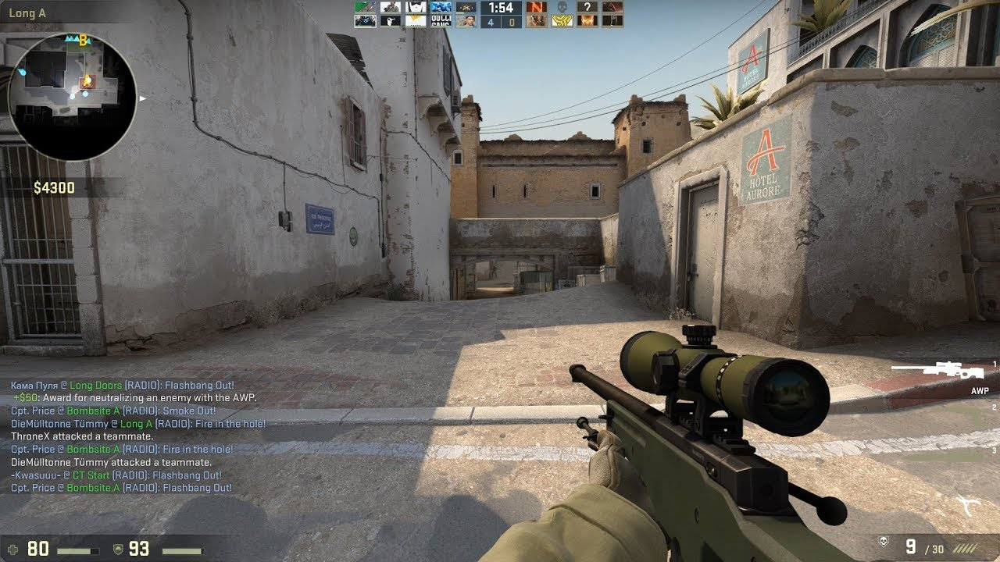
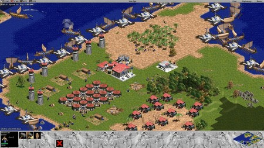

Quieres saber mas ...
Quien soy
Mi familia
Y que me gusta hacer, la verdad de las cosas, mi primer pasatiempo que le he dedicado gran parte de mi tiempo es en los juegos, en su gran mayoría de computador, ya que es donde por primera vez jugué, juego de todo tipo, nunca elegí un tipo, si tengo ganas juego de estrategia o sino, le doy a algún juego de disparos, pero si algo importante es que el primer juego que toque fue de estrategia, de ahí nunca deje de jugar en mis tiempos libre.
Otro dato es que por mucho tiempo jugué a la pelota con gran esmero, pero la verdad es que llego el momento que me canso y ahí fue cuando encontré a mi amor, el basquetbol, aunque no sea el mejor, pero me encanta como deporte y sus reglas, además en los partidos de este siempre me emociona ver la versatilidad y velocidad del juego.
 
Otro pasatiempo que tengo es escuchar música, aunque no tengo un tipo ni grupo determinado, en épocas escucho rock, en otro metal, cambio a pop o escucho alguna electrónica, nunca me ha gustado el quedarme en una línea en torno a esto, por eso se podría decir que escucho de todo.
Y otro aspecto que tengo, es que veo mucho anime, y al mismo tiempo se mucho de anime, ya que he visto muchísimos, desde largos hasta cortos, por eso se podría decir que soy otaku, pero sin chapas, eso sí. Para que se note, lo mas seguro es que programo escuchando música de algún anime, para este momento “Aldnoah.Zero”.